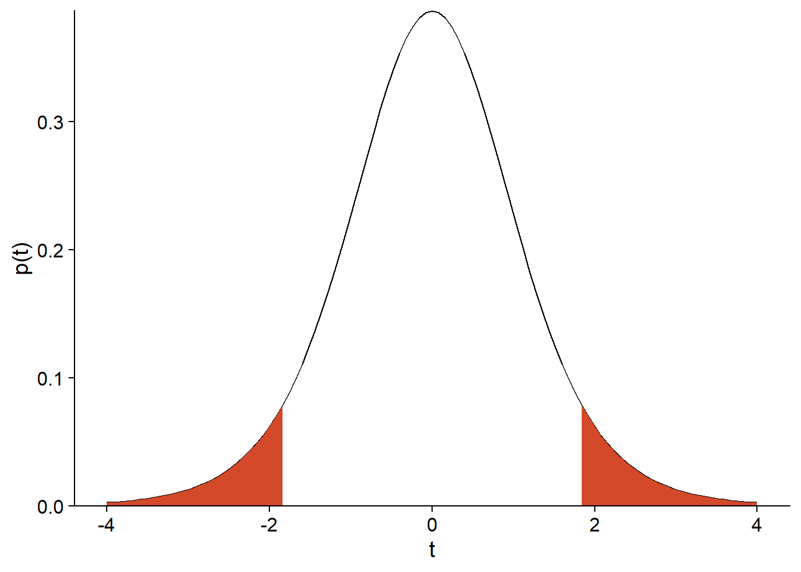
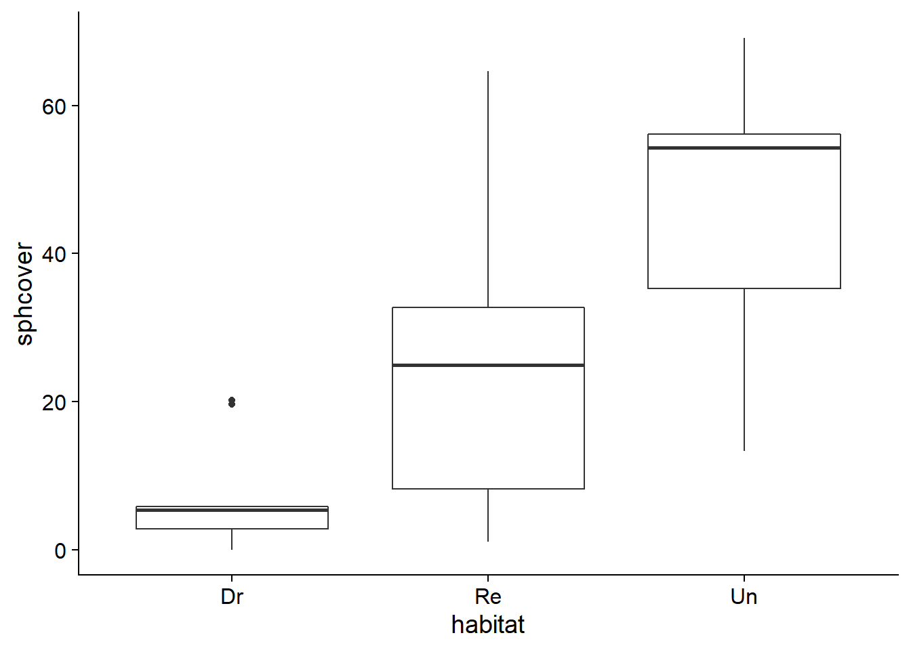
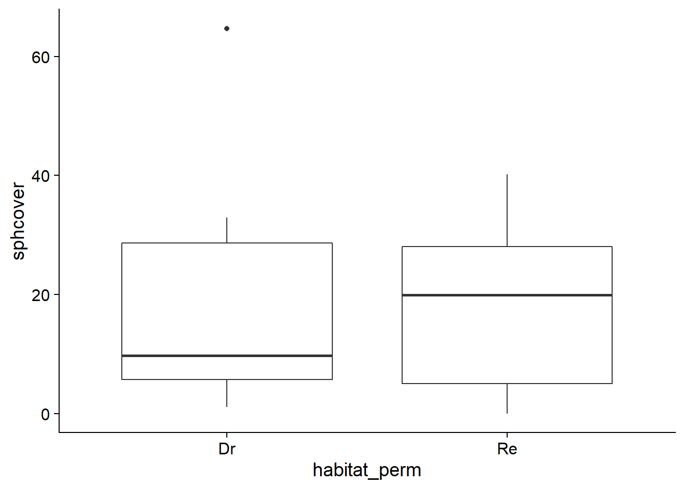
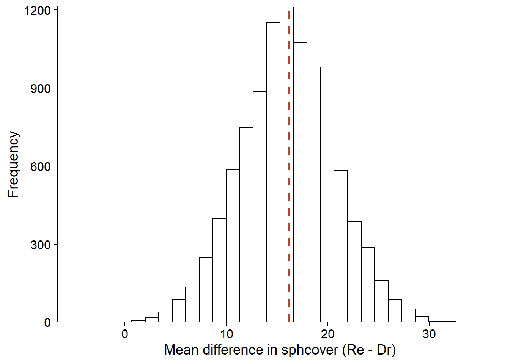
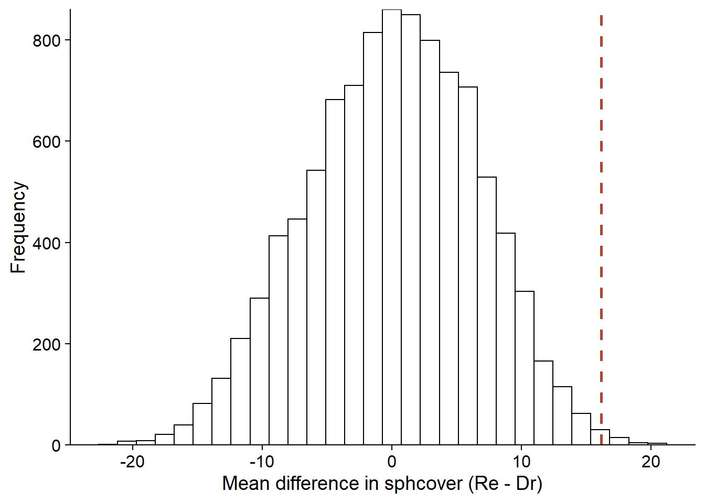
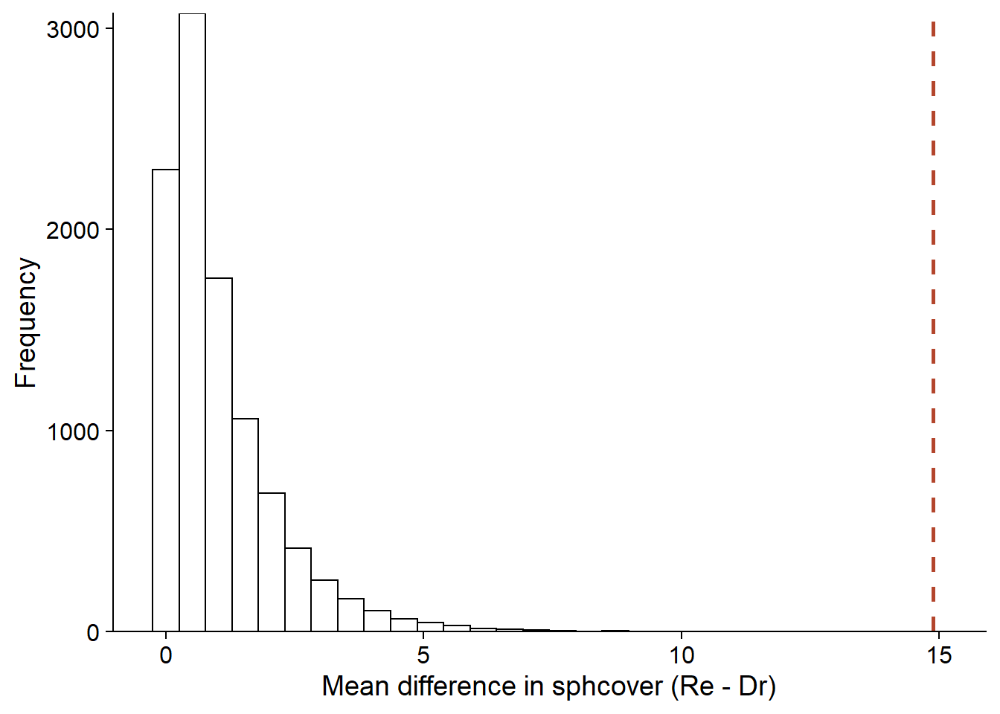
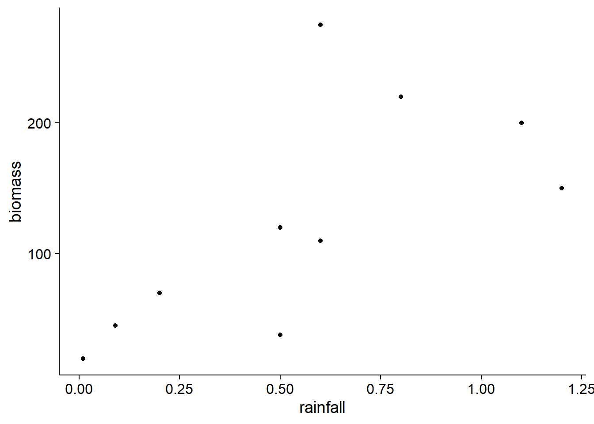

Randomization tests
Introduction
Seen in the previous class, bootstrapping is a method for determining the distribution of a statistic from a sample, without having to assume a parametric model for the sampling process. This method is based on the resampling of the observed sample.
Randomization tests are another non-parametric method based on resampling. These tests aim to approximate the distribution of a statistic in the case where a certain null hypothesis (e.g. independence between two variables) is true.
Contents
Review of concepts related to hypothesis testing
Example of a randomization test
Comparison between bootstrapping and randomization tests
Randomization for simple linear regression or one-way ANOVA
Multiple linear regression and multi-way ANOVAs
Hypothesis testing
A statistical hypothesis test is designed to determine whether the variation observed in an observed sample is consistent with a “default” model (the null hypothesis), or whether observations are so unlikely under the null hypothesis that it should be rejected.
Example: Mean compared to a reference value
Suppose a theory tells us that the mean of a variable \(x\) in a population would be equal to a reference value \(\mu_0\). We sample \(n\) values of this variable in the population; the sample mean is \(\bar{x}\) and its standard deviation is \(s\).
If we can assume that \(\bar{x}\) follows a normal distribution, then the difference between \(\bar{x}\) and the population mean \(\mu\), divided by the standard error of \(\bar{x}\) (i.e. \(s / \sqrt{n}\)), follows a \(t\) distribution with \(n - 1\) degrees of freedom.
\[t_{n-1} = \frac{\bar{x} - \mu}{s / \sqrt{n}}\]
In this case, once \(\bar{x}\) and \(s\) are calculated, the \(t\) distribution tells us the probability, if the null hypothesis \(\mu = \mu_0\) is correct, of obtaining a value of \(\bar{x}\) as far or further away from \(\mu_0\) than the one calculated from this sample.
For example, suppose that \(\mu_0 = 1\), \(n = 9\), \(\bar{x} = 4\), and \(s = 5\). In this case, \(t = (4 - 1) / (5/3) = 1.8\) if the null hypothesis is true. The probability of observing such a large deviation if \(\mu = \mu_0\) is given by the area under the curve of the \(t\) distribution with \(n - 1 = 8\) degrees of freedom, for \(t > 1.8\) or \(t < -1.8\):
t_obs <- 1.8
ggplot(NULL) + xlim(-4, 4) +
labs(x = "t", y = "p(t)") +
stat_function(fun = function(x) dt(x, df = 8)) +
stat_function(fun = function(x) ifelse(abs(x) > t_obs, dt(x, df = 8), NA), geom = "area", fill = "#d3492a") +
scale_y_continuous(expand = c(0, 0))
In R, the cumulative distribution function pt(q, df) gives the probability that a value from the \(t\) distribution with \(df\) degrees of freedom is less than or equal to \(q\). Therefore, the area under the curve can be calculated as follows:
pt(-1.8, 8) + (1 - pt(1.8, 8))## [1] 0.109553This is the \(p\)-value of the test.
Note that the two terms of the sum are equal because the \(t\) distribution is symmetrical. A null hypothesis of the type \(\mu = \mu_0\) is bilateral because the alternative can occur in either direction. For a one-sided hypothesis (e.g., \(\mu = \mu_0\)), the \(p\)-value would be the area under the curve on one side only.
Finally, the \(p\)-value is compared to a significance level \(\alpha\) chosen before performing the test. The null hypothesis is rejected if \(p < \alpha\). The significance level is therefore the probability of rejecting the null hypothesis if it is true. The most commonly used value is \(\alpha = 0.05\).
Components of a hypothesis test
Starting from a given null hypothesis, the construction of a statistical test requires three main components:
- a statistic that measures the deviation of the observations from the null hypothesis;
- the distribution of this statistic under the null hypothesis; and
- a significance level.

In some cases, as in the \(t\) test, the exact distribution of the test statistic under the null hypothesis can be derived mathematically. Another example is the one-factor ANOVA, where the ratio of the observed variation between groups to the variation within groups follows a \(F\) distribution when the observations in each group come from the same normal distribution.
| One-sample \(t\)-test (\(n\) individuals) | One-factor ANOVA (\(m\) groups of \(n\) individuals) | |
|---|---|---|
| Null hypothesis | The mean \(\bar{x}\) equals \(\mu\) | Same mean in each of the \(m\) groups |
| Statistic | \(t = (\bar{x} - \mu) / (s/\sqrt{n})\) | \(F = MSA/MSE\) |
| Distribution | \(t\) with \(n-1\) degrees of freedom | \(F\) with \(m(n-1)\) and \((m - 1)\) degrees of freedom |
Randomization tests provide a way to approximate the distribution of the statistic under certain null hypotheses, when the data do not meet the assumptions to use a known theoretical distribution.
Principle of randomization tests
Example
Let’s take the sphagnum_cover.csv dataset that we used for the bootstrapping exercises. It contains measures of the percentage of sphagnum moss cover (sphcover) in three types of swamp habitats: drained (Dr, 9 replicates), rewetted (Re, 18 replicates) and undrained (Un, 9 replicates).
cover <- read.csv("../donnees/sphagnum_cover.csv")
ggplot(cover, aes(x = habitat, y = sphcover)) +
geom_boxplot()
Let’s first focus on comparing the Dr and Re swamps.
library(dplyr)
cover2 <- filter(cover, habitat != "Un")
head(cover2)## site habitat sphcover
## 1 KoniOj Dr 19.6287879
## 2 LakkOj Dr 5.6696970
## 3 LiOjNx Dr 0.1969697
## 4 LiOjSx Dr 4.8590909
## 5 RuOjSP Dr 5.3939394
## 6 RuOjSu Dr 0.0000000Suppose this was an experimental design where 27 drained wetlands were selected in one area and 18 of these 27 were randomly selected for restoration, while the other 9 (control sites) remained drained.
Consider the null hypothesis that treatment Re has no effect on the response variable sphcover. In this case, the differences in sphagnum cover observed between sites are due to factors other than the treatment. In particular, a dataset obtained by randomly permuting the values of the Dr and Re treatments between sites is as likely, under the null hypothesis, as the observed dataset.
In R, the sample function is used to draw a sample from a vector. With the default settings, sample(x) draws a sample without replacement equal in size to the vector x, which produces a permutation of the original data.
set.seed(82022)
cover_perm <- cover2
cover_perm$habitat_perm <- sample(cover2$habitat)
head(cover_perm)## site habitat sphcover habitat_perm
## 1 KoniOj Dr 19.6287879 Re
## 2 LakkOj Dr 5.6696970 Dr
## 3 LiOjNx Dr 0.1969697 Re
## 4 LiOjSx Dr 4.8590909 Re
## 5 RuOjSP Dr 5.3939394 Re
## 6 RuOjSu Dr 0.0000000 Reggplot(cover_perm, aes(x = habitat_perm, y = sphcover)) +
geom_boxplot()
Randomization test for a difference between means
For the observed data, the rewetted sites have a mean sphcover around 16 percentage points greater than drained sites.
diff_obs <- mean(cover2$sphcover[cover2$habitat == "Re"]) -
mean(cover2$sphcover[cover2$habitat == "Dr"])
diff_obs## [1] 16.1413We can approximate the distribution of this statistic under the null hypothesis by calculating the difference for a large number of permutations of the treatments in the original sample.
To do this, we define a function containing the permutation operation and the difference calculation, and then we repeat its execution with replicate. (Note that for a function without any arguments, it is necessary to include empty parentheses after the function name in the replicate statement.)
diff_perm <- function() {
cover_perm <- cover2
cover_perm$habitat_perm <- sample(cover2$habitat)
mean(cover_perm$sphcover[cover_perm$habitat_perm == "Re"]) -
mean(cover_perm$sphcover[cover_perm$habitat_perm == "Dr"])
}
nperm <- 9999
diff_null <- replicate(nperm, diff_perm())The graph below shows a histogram of the difference values obtained by permutation, with a dotted line showing the observed difference.
perm_hist <- ggplot(NULL, aes(x = diff_null)) +
labs(x = "Mean difference in sphcover (Re - Dr)", y = "Frequency") +
geom_histogram(color = "black", fill = "white") +
geom_vline(xintercept = diff_obs, linetype = "dashed", color = "#b3452c", size = 1) +
scale_y_continuous(expand = c(0, 0))
perm_hist
Since the null hypothesis assumes no effect of the treatment, the mean difference should be 0. The mean of the permutation results differs somewhat from zero because of the numerical approximation (9999 randomly selected permutations across all possible permutations).
mean(diff_null)## [1] 0.08801381Calculating the \(p\)-value
In general, suppose that the statistic \(T\) measures the deviation of the observed data from the null hypothesis. For the observed sample, \(T = T_{obs}\); for the \(N\) permutations, we get a set of values \(T^*\).
In this case, the \(p\)-value of the test is calculated as follows:
\[\frac{\# \left(|T^*| \ge |T_{obs}| \right) + 1}{N + 1}\]
The term \(\# (|T^*| \ge |T_{obs}| )\) is the number of values of \(T^*\) with an absolute value that is greater than or equal to the absolute value of \(T_{obs}\). So if \(T_{obs} = 16\), we count the number of values \(\ge 16\) or \(\le -16\). In the case of a one-sided hypothesis test, we count the extreme values on one side only.
In our example, \(p = 0.009\).
(sum(abs(diff_null) >= abs(diff_obs)) + 1) / (nperm + 1)## [1] 0.009Note that each comparison produces a logical value (TRUE or FALSE) and sum counts the number of TRUE values.
The addition of 1 to the numerator and denominator in the \(p\)-value equation represents the fact that the observed data is one of the possible permutations. Increasing the number of permutations makes it possible to determine \(p\) with a better resolution. With \(N\) permutations, the minimum possible value for \(p\) is equal to \(1 / (N + 1)\), obtained when the observed statistic is more extreme than every simulated value.
Assumptions of the randomization test
In an experimental context, it is the random assignment of treatments to individuals that ensures that the randomization test is valid, i.e., the samples produced by swapping treatments represent the distribution of the statistic under the null hypothesis.
In a context where treatments have been observed rather than assigned, the randomization test requires that the observations be exchangeable if the null hypothesis is true, i.e., that each sample obtained by permutation is equally likely.
For example, the hypothesis that a response variable is equally distributed in each group can be tested by randomization. However, we could not test the hypothesis that two groups have the same mean but a different variance, since permuting group labels would erase this difference in variances.
Exchangeability of observations also does not apply if the observations are grouped (e.g., plots grouped together in sites) or correlated in space and time. This type of case requires more complex types of permutation that preserve the structure of the data.
Randomization tests are also sometimes referred to as permutation tests. Some authors reserve these two names for different situations (e.g., depending on whether or not it is an experimental device, or whether it is an exact or approximate test), but we will not make a distinction here.
Comparison between bootstrapping and randomization tests
Bootstrapping and randomization tests are two non-parametric methods of inference based on the simulation of virtual samples (Monte Carlo methods). They can sometimes be applied to the same problem, as in our example of sphagnum moss cover in different habitats.
For this example, the bootstrap proceeds by resampling the observations in each habitat type (keeping the relation between sphcover and habitat). By calculating the difference in mean coverage, we obtain a distribution of this difference centered on the value of the statistic for the observed sample (dotted line). This distribution allows us, in particular, to calculate the confidence interval for a given probability.
library(boot)
diff_boot <- function(x, i) {
cover_boot <- x[i, ]
mean(cover_boot$sphcover[cover_boot$habitat == "Re"]) -
mean(cover_boot$sphcover[cover_boot$habitat == "Dr"])
}
diff_boot_res <- boot(cover2, diff_boot, R = 10000)
ggplot(NULL, aes(x = diff_boot_res$t)) +
labs(x = "Mean difference in sphcover (Re - Dr)", y = "Frequency") +
geom_histogram(color = "black", fill = "white") +
geom_vline(xintercept = diff_obs, linetype = "dashed", color = "#b3452c", size = 1) +
scale_y_continuous(expand = c(0, 0))
In contrast, the randomization test resamples without replacement (permutes) the habitat types to simulate the absence of a relationship between sphcover and habitat. We thus obtain a distribution of the mean difference in cover under the null hypothesis, centered on 0, which allows us to calculate the probability of having obtained a more extreme value than the observed one, if the null hypothesis were true.
perm_hist## `stat_bin()` using `bins = 30`. Pick better value with `binwidth`.
There is a general relationship between a hypothesis test and a confidence interval. If the \(100(1 - \alpha)\%\) confidence interval of a parameter \(\theta\) does not include \(\theta_0\), then the hypothesis \(\theta = \theta_0\) can be rejected with a significance level of \(\alpha\).
For example, if the 95% confidence interval for the difference in means excludes 0, then we know that the \(p\)-value associated with the hypothesis that this difference is zero is less than 0.05. However, the bootstrap confidence interval does not allow us to obtain the precise \(p\)-value for a given test. In contrast, if a randomization test allows us to reject the null hypothesis, it is not easy to deduce the confidence interval for the value of the parameter from this test.
Finally, there are statistical tests where the null hypothesis cannot be represented by randomization. For example, when comparing the mean of a single group to a reference value, there is nothing to randomize. In this case, one can still obtain a confidence interval with the bootstrap and check whether it includes the reference value.
Randomization and one-way ANOVA
One-way ANOVA model
Suppose we measure the variable \(y\) for \(m\) groups each comprising \(n\) observations. The one-way ANOVA model assumes that \(y_{ik}\), the observation \(k\) in group \(i\), is the sum of three terms: the global mean of the population \(\mu\), the difference \(\alpha_i\) between the mean of group \(i\) and the global mean, and then a residual \(\epsilon_{ik}\).
\[y_{ik} = \mu + \alpha_i + \epsilon_{ik}\]
In particular, residuals in each group follow a normal distribution with the same variance.
\[\epsilon_{ik} \sim N(0, \sigma)\]
For this model, the null hypothesis is that the mean of all groups is identical, i.e. all \(\alpha_i\) are 0.
Let us denote by \(\bar{y}\) the global mean of the observations and by \(\bar{y_i}\) the mean of the observations in group \(i\). The sum of the squared deviations between the observations and the global mean (SST) can be decomposed into two parts: one part due to the deviations between the group means and the global mean (SSA) and one part due to the deviations between the observations and the mean of their group (SSE).
\[SST = SSA + SSE\] \[\sum_{i = 1}^m \sum_{k = i}^n (y_{ik} - \bar{y})^2 = \sum_{i = 1}^m n (\bar{y_i} - \bar{y})^2 + \sum_{i = 1}^m \sum_{k = i}^n (y_{ik} - \bar{y_i})^2\]
Dividing SSA and SSE by the appropriate number of degrees of freedom (i.e., \(m-1\) for intergroup differences, \(m(n-1)\) for differences between observations in the same group) yields the mean square errors MSA and MSE, which we can consider as inter-group and intra-group variances, respectively. The \(F\) statistic corresponds to the MSA/MSE ratio. The higher the \(F\), the larger the inter-group variance compared to the intra-group variance.
| Component | Sum of squares (SS) | Degrees of freedom (df) | Mean square (MS) |
|---|---|---|---|
| Groups | \(SSA = \sum_{i = 1}^m n (\bar{y_i} - \bar{y})^2\) | \(m - 1\) | \(MSA = \frac{SSA}{m - 1}\) |
| Residuals | \(SSE = \sum_{i = 1}^m \sum_{k = i}^n (y_{ik} - \bar{y_i})^2\) | \(m(n-1)\) | \(MSE = \frac{SSE}{(n-1)m}\) |
| Total | \(SST = \sum_{i = 1}^m \sum_{k = i}^n (y_{ik} - \bar{y})^2\) | \(mn - 1\) |
If the null hypothesis is true, i.e., the observed differences between groups are due to the random sampling alone, the \(F\) statistic follows the \(F\) distribution, with two parameters corresponding to the number of degrees of freedom of MSA and MSE.
The \(F\) test is one-tailed. If the group means differ, the \(F\) statistic will be larger than expected under the null hypothesis.
Here is for example the result of a classical ANOVA comparing sphagnum cover for the three habitat types of the cover dataset.
aov_cover <- aov(sphcover ~ habitat, data = cover)
summary(aov_cover)## Df Sum Sq Mean Sq F value Pr(>F)
## habitat 2 7048 3524 14.88 2.47e-05 ***
## Residuals 33 7814 237
## ---
## Signif. codes: 0 '***' 0.001 '**' 0.01 '*' 0.05 '.' 0.1 ' ' 1It will be useful later to extract the \(F\) value corresponding to the difference between habitats, which we can do by first saving the output of summary.
aov_sum <- summary(aov_cover)
f_obs <- aov_sum[[1]][1, 4]
f_obs## [1] 14.8819In the code above, [[1]] extracts the first ANOVA table (there is only one here), then [1, 4] extracts the value in row 1 (habitat), column 4 (F value).
Randomizing the ANOVA
If the ANOVA assumptions are not met, especially if the data from each group departs significantly from a normal distribution, then the calculated \(F\) statistic will not exactly follow a \(F\) distribution. In this case, we can determine the distribution of the statistic by a randomization test.
As with the comparison of two means, we perform a permutation of the values in the habitat column and then extract the \(F\) value from the ANOVA applied to the permuted data.
f_perm <- function() {
cover_perm <- cover
cover_perm$habitat_perm <- sample(cover$habitat)
aov_sum <- summary(aov(sphcover ~ habitat_perm, data = cover_perm))
aov_sum[[1]][1, 4]
}
nperm <- 9999
f_null <- replicate(nperm, f_perm())ggplot(NULL, aes(x = f_null)) +
labs(x = "Mean difference in sphcover (Re - Dr)", y = "Frequency") +
geom_histogram(color = "black", fill = "white") +
geom_vline(xintercept = f_obs, linetype = "dashed", color = "#b3452c", size = 1) +
scale_y_continuous(expand = c(0, 0))
Here, the \(F\) statistic calculated from the observations exceeds all the values obtained by permutation, so we obtain the minimum possible \(p\) value according to the number of permutations, i.e. 1/10000.
(sum(f_null >= f_obs) + 1) / (nperm + 1)## [1] 1e-04ANOVA for a multivariate response
The ANOVA model can be generalized to the case where the response \(y\) is multivariate; for example, if we want to compare community composition (abundance of several species) at sites with different treatments.
After selecting an appropriate distance measure to characterize the level of dissimilarity between the compositions of two sites, the mean square distance between (i) sites with the same treatment and (ii) sites with different treatments is calculated. These two statistics are equivalent to the MSE and MSA, respectively, so their ratio is analogous to the \(F\) statistic. As in the univariate case, we can calculate the \(p\) value of this statistic by randomizing the treatments, with the null hypothesis being that the treatments have no effect on the multivariate composition.
This method known as PERMANOVA (for permutational multivariate analysis of variance) is implemented in several software packages, including the R vegan package (adonis function) and the commercial software PRIMER.
Simple linear regression
The dataset environment.csv (from the textbook by Beckerman and Petchey, Getting started with R: An introduction for biologists) includes root biomass measurements (biomass, in g/m\(^2\)) at 10 sites as a function of altitude (in m), temperature (in degrees C) and annual rainfall (in m).
enviro <- read.csv("../donnees/environment.csv")For this example, we will consider how biomass varies with precipitation.
ggplot(enviro, aes(x = rainfall, y = biomass)) +
geom_point()
According to the linear regression model below, biomass is estimated to increase by 144 g/m\(^2\) when annual precipitation increases by one meter. The probability of obtaining an estimate of this magnitude when the coefficient is equal to zero is equal to \(p = 0.034\); this \(p\) value is based on a normal distribution for this estimate.
mod <- lm(biomass ~ rainfall, data = enviro)
summary(mod)##
## Call:
## lm(formula = biomass ~ rainfall, data = enviro)
##
## Residuals:
## Min 1Q Median 3Q Max
## -78.136 -24.178 -7.373 2.204 144.424
##
## Coefficients:
## Estimate Std. Error t value Pr(>|t|)
## (Intercept) 43.93 38.18 1.151 0.283
## rainfall 144.40 56.55 2.553 0.034 *
## ---
## Signif. codes: 0 '***' 0.001 '**' 0.01 '*' 0.05 '.' 0.1 ' ' 1
##
## Residual standard error: 67.44 on 8 degrees of freedom
## Multiple R-squared: 0.449, Adjusted R-squared: 0.3802
## F-statistic: 6.52 on 1 and 8 DF, p-value: 0.03399To carry out a randomization test of this same hypothesis (absence of correlation between biomass and rainfall), we can permute the precipitation values and calculate the correlation coefficient between these permuted data and the biomass observations.
nperm <- 9999
rain_cor <- function() {
rain_perm <- sample(enviro$rainfall)
cor(rain_perm, enviro$biomass)
}
rain_null <- replicate(nperm, rain_cor())Note that the correlation coefficient between rainfall and biomass is proportional to the coefficient of the above regression and the proportionality factor (the ratio between the variances of biomass and rainfall) remains unchanged with the permutations. Thus, the value \(p\) will be the same for both statistics: regression coefficient and correlation coefficient.
rain_obs <- cor(enviro$rainfall, enviro$biomass)
(sum(abs(rain_null) > abs(rain_obs)) + 1) / (nperm + 1)## [1] 0.0388Here, the \(p\)-value of the randomization test is very close to the one obtained from the classical linear model above \((p = 0.034)\).
Models with multiple predictors
So far, we have considered randomization tests for models with a single predictor variable (numerical or categorical). The distribution of the statistic, under the null hypothesis where the predictor has no effect, can be obtained by random permutation of the predictor values. This permutation has the effect of “destroying” any existing correlation between the response and the predictor.
The situation becomes more complicated when we want to test the absence of effect of a predictor in a model with several predictors. For example, consider the case where \(y\) is a linear function of \(x\) and \(w\):
\[y = \beta_0 + \beta_1 x + \beta_2 w\]
In a multiple regression model, each coefficient gives the effect of one variable if the other terms remain constant. Suppose we want to test the hypothesis \(\beta_1 = 0\).
In this case, permuting \(y\) eliminates its correlation with both \(x\) and \(w\). It therefore simulates the null hypothesis where both predictors have no effect. Permuting \(x\) retains the relationship between \(y\) and \(w\), but eliminates a possible correlation between \(x\) and \(w\), so the resulting permuted samples are no longer representative of the joint distribution of predictors.
Anderson (2001) discusses this problem in detail and recommends Freedman and Lane’s method of first estimating the parameters of a model without \(x\):
\[y = \beta_0 + \beta_2 w\]
then perform a randomization test for the correlation between the residuals of this model (i.e. the part of the response not explained by \(w\)) and the variable \(x\).
Anderson (2001) discusses special cases where other methods, such as Manly’s (swapping the values of \(y\)) and ter Braak’s (swapping the residuals of the full model including \(x\)), would also be recommended.
In R, the permuco package allows automatic permutation tests for each predictor of a linear model (lmperm function) or an ANOVA (aovperm function), with a choice of methods including those described by Anderson (2001).
For example, here is the result of a regression of root biomass as a function of temperature and precipitation, for the enviro dataset. By default, the lmperm function uses the Freedman and Lane method with 5000 permutations.
library(permuco)
lmperm(biomass ~ temperature + rainfall, data = enviro)## Table of marginal t-test of the betas
## Permutation test using freedman_lane to handle nuisance variables and 5000 permutations.
## Estimate Std. Error t value parametric Pr(>|t|) permutation Pr(<t)
## (Intercept) 525.28 97.247 5.4015 0.001007
## temperature -22.32 4.423 -5.0465 0.001486 0.0030
## rainfall -29.51 44.449 -0.6639 0.528029 0.2678
## permutation Pr(>t) permutation Pr(>|t|)
## (Intercept)
## temperature 0.9972 0.0030
## rainfall 0.7324 0.5264The results table shows both the \(p\)-value for the standard (two-tailed) parametric test, as well as the one-tailed and two-tailed \(p\)-values obtained by randomization. In this case, there is little difference between the bilateral randomization test (last column) and the parametric tests.
Summary
Randomization tests offer a non-parametric alternative to many conventional hypothesis tests, when the null hypothesis represents the absence of effect of a predictor on a given response.
The distribution of the test statistic under the null hypothesis is approximated by calculating this statistic for many permutations of the original data set. These permutations are designed to break any association between the response and the tested predictor, while maintaining the other characteristics of the dataset.
The
samplefunction allows permutations of a vector of values in R. By combining permutation and calculation of the statistic in the same function, several simple randomization tests can be manually coded (comparison of means, single-factor ANOVA, simple linear regression).The permuco package in R provides functions to perform randomization tests for each predictor of a multiple linear model or a multi-way ANOVA.
Reference
Anderson, M.J. (2001) Permutation tests for univariate or multivariate analysis of variance and regression. Canadian Journal of Fisheries and Aquatic Sciences 58: 626-639.